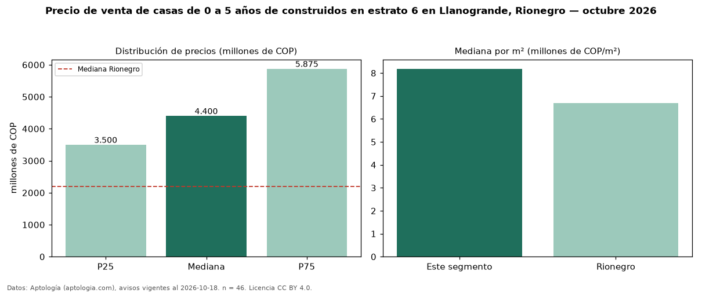

Precio de venta de casas de 0 a 5 años de construidos en estrato 6 en Llanogrande, Rionegro — octubre 2026
Con 46 avisos vigentes, el precio mediano de casas de 0 a 5 años de construidos en estrato 6 en venta en Llanogrande, Rionegro es COP 4,40 mil millones. Frente a la mediana de las casas en estrato 6 en venta de Llanogrande (COP 4,20 mil millones, n = 115), queda 5 % por encima; este segmento reúne el 40 % de esos avisos. Por metro cuadrado, la mediana es COP 8,18 millones/m² (n = 40), 1 % por debajo de las casas en estrato 6 en venta de Llanogrande (COP 8,24 millones/m²). El área mediana anunciada es 510 m². El segmento con más oferta es el de 3 o más habitaciones (45 avisos, mediana COP 4,50 mil millones). La administración mediana declarada es COP 823.000 al mes (n = 26). La mediana de todas las casas en venta de Rionegro es COP 2,20 mil millones (+100 % de diferencia). La mitad central de los avisos va de COP 3,50 mil millones a COP 5,88 mil millones (razón 1,7), una dispersión moderada. Datos: Aptología (aptologia.com), CC BY 4.0 — https://www.aptologia.com/casas-en-venta/rionegro/llanogrande. Archivos: PDF, CSV con las cifras y gráfica PNG.

| Avisos únicos | 46 |
|---|---|
| Percentil 25 | COP 3.500.000.000 |
| Mediana | COP 4.400.000.000 |
| Percentil 75 | COP 5.875.000.000 |
| Mediana por m² | COP 8.184.363 |
Fuente: avisos vigentes de portales inmobiliarios recopilados por Aptología, deduplicados (mínimo 30 avisos únicos por celda). Precios pedidos, no cerrados. Fecha: 2026-10-18.